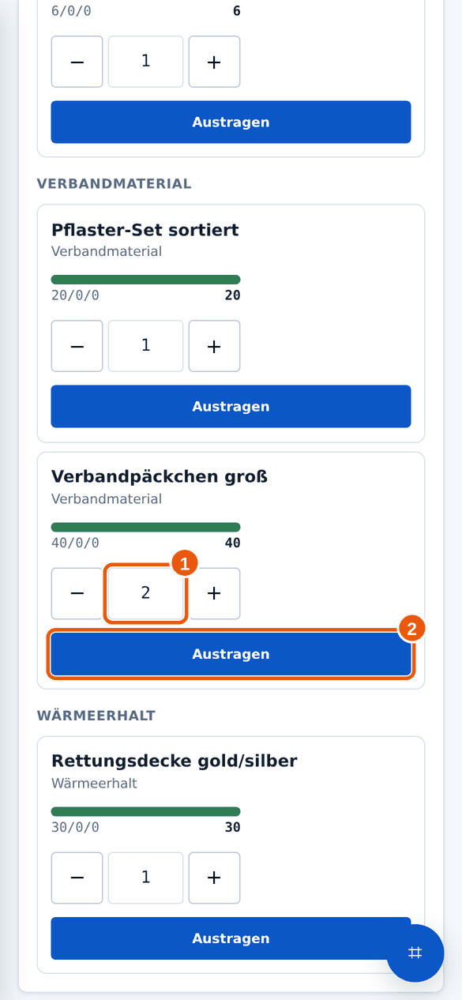
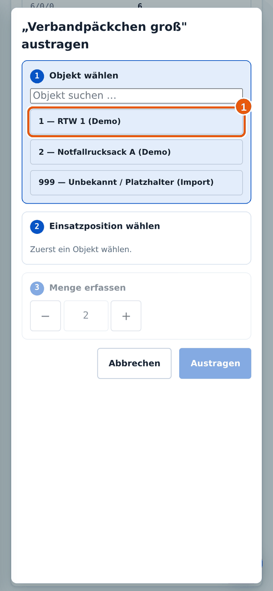
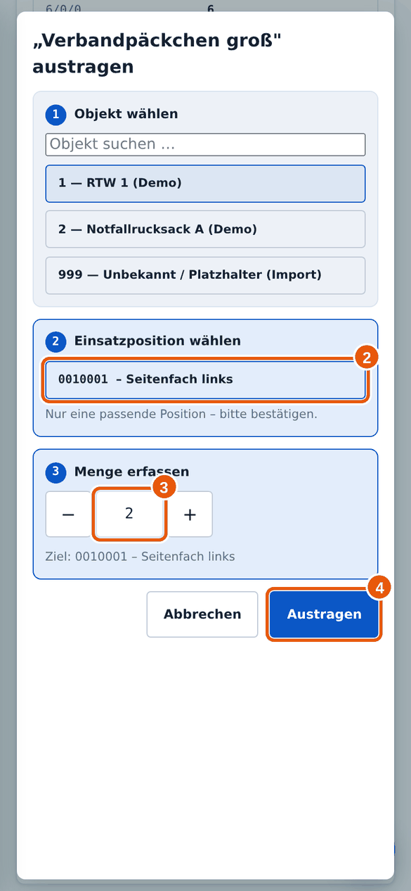
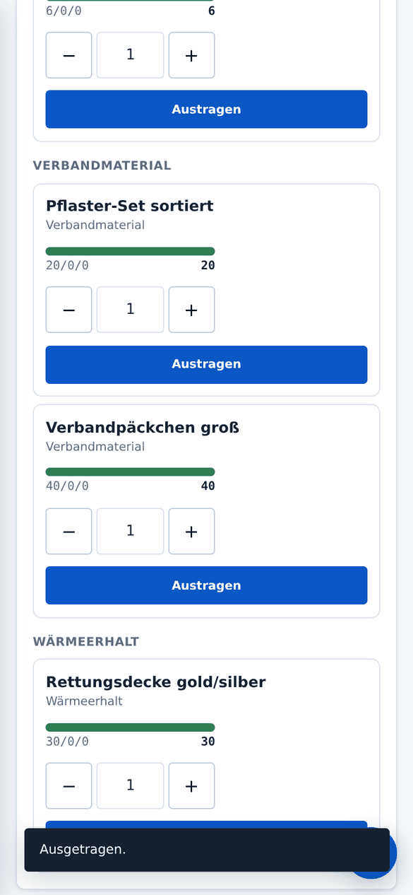
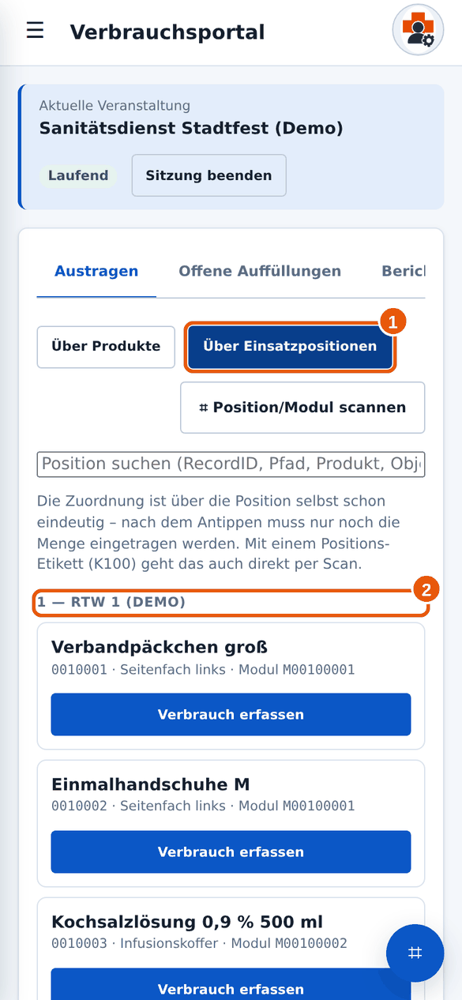
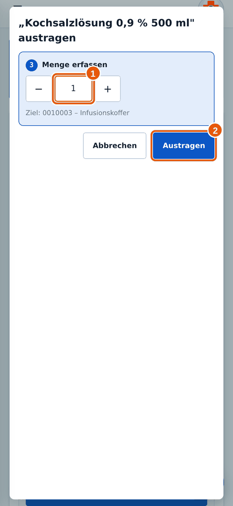

2.3Material austragen
Wann brauchst du das? Du hast bei einer Veranstaltung Material aus einem Fahrzeug, Rucksack oder Koffer verbraucht.
✔Das brauchst du vorher
- Du hast die Veranstaltung gewählt (siehe Veranstaltung wählen).
- Du weißt, was verbraucht wurde, wie viel und aus welchem Fahrzeug oder Rucksack (das „Objekt“).
Weg A: Über Produkte (der schnellste Weg)
- Bleibe im Reiter Austragen und wähle Über Produkte. Suche das Produkt, entweder mit dem Suchfeld oder durch Blättern. Zuletzt ausgetragene Produkte stehen oben unter „Zuletzt in dieser Sitzung ausgetragen“. Dort kannst du mit Nochmal austragen schnell wiederholen.
- Stelle bei dem Produkt die Menge ein. Mit + und − 1 zählst du hoch und runter, du kannst die Zahl auch direkt eintippen. Tippe dann auf Austragen 2.

1 Menge, 2 Austragen. - Es öffnet sich ein Dialog mit drei Schritten. Schritt 1: Tippe das Objekt an, aus dem das Material kam 1. Das ist dein Fahrzeug, Rucksack oder Koffer.

Schritt 1: 1 Objekt wählen. - Schritt 2: Milan zeigt die passende Einsatzposition. Bei nur einer Möglichkeit steht „bitte bestätigen“. Tippe sie an 2. Schritt 3: Prüfe die Menge 3 und tippe auf Austragen 4.

2 Position, 3 Menge, 4 Austragen. - Unten erscheint kurz „Ausgetragen.“. Der Eintrag ist gespeichert. Er taucht jetzt im Reiter Offene Auffüllungen auf.

Die Bestätigung verschwindet nach wenigen Sekunden von selbst.
Weg B: Über Einsatzpositionen
Dieser Weg passt, wenn du genau weißt, aus welchem Fahrzeug oder Rucksack das Material kam. Du wählst zuerst den Ort, dann das Produkt.
- Tippe auf Über Einsatzpositionen 1. Die Liste ist nach Objekten sortiert 2. Mit dem Suchfeld findest du eine Position auch über Produktnamen oder Pfad.

1 Weg wählen, 2 Gruppe nach Objekt. - Tippe bei der richtigen Position auf Verbrauch erfassen. Weil Ort und Produkt schon feststehen, musst du nur noch die Menge 1 prüfen und auf Austragen 2 tippen.

1 Menge, 2 Austragen.
Weg C: Per Scan
Tippe auf Position/Modul scannen und halte die Kamera auf das Etikett des Moduls oder der Position. Milan wählt dann den richtigen Eintrag. Wie das Scannen funktioniert, steht unter Scannen.
In der Objektliste gibt es den Eintrag „999 – Unbekannt / Platzhalter“. Wähle ihn nur, wenn du wirklich nicht weißt, woher das Material stammt. Sage danach dem Materialwart Bescheid, damit er es zuordnen kann.
Ich habe die falsche Menge eingetragen.
Das lässt sich korrigieren, solange noch nicht aufgefüllt wurde. Siehe Eintrag korrigieren oder entfernen.
Das Produkt finde ich nicht.
Probiere einen kürzeren Suchbegriff oder die Kategorie. Findest du es trotzdem nicht, ist es nicht in Milan angelegt. Melde das dem Materialwart.
Muss ich dazu im Fahrzeug sein?
Nein. Du kannst das von überall tun, wo du Milan öffnen kannst.